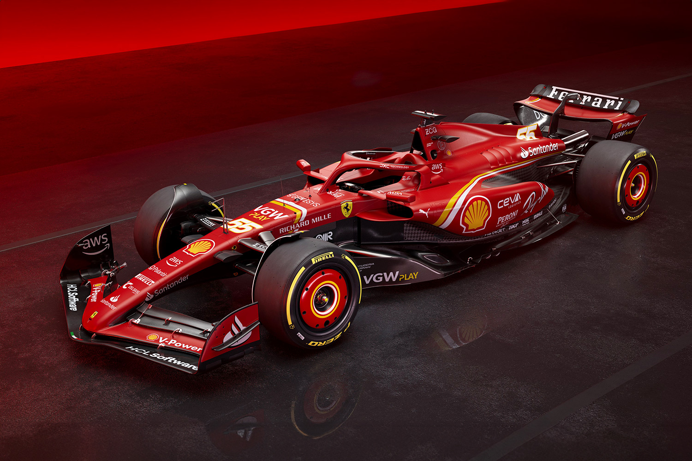
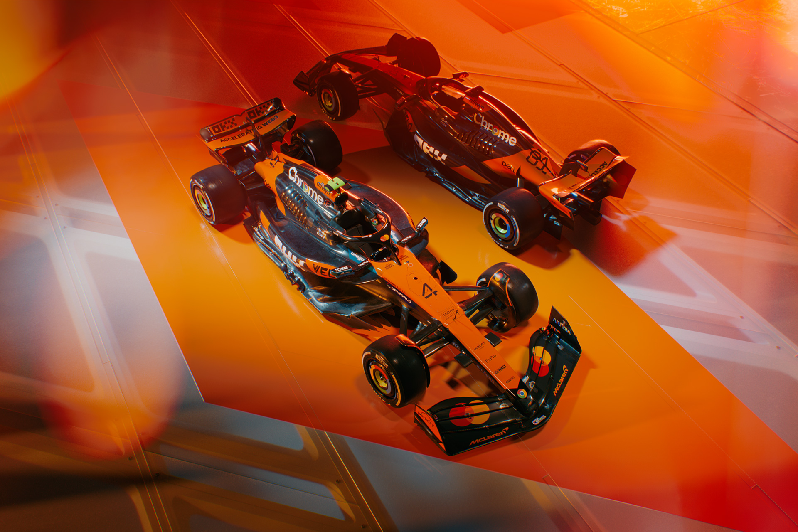
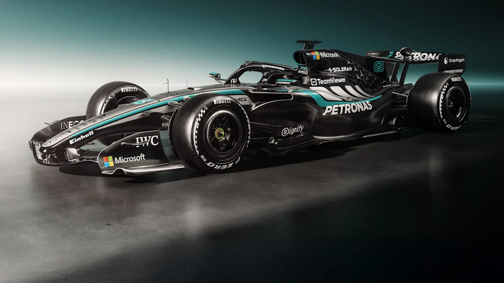
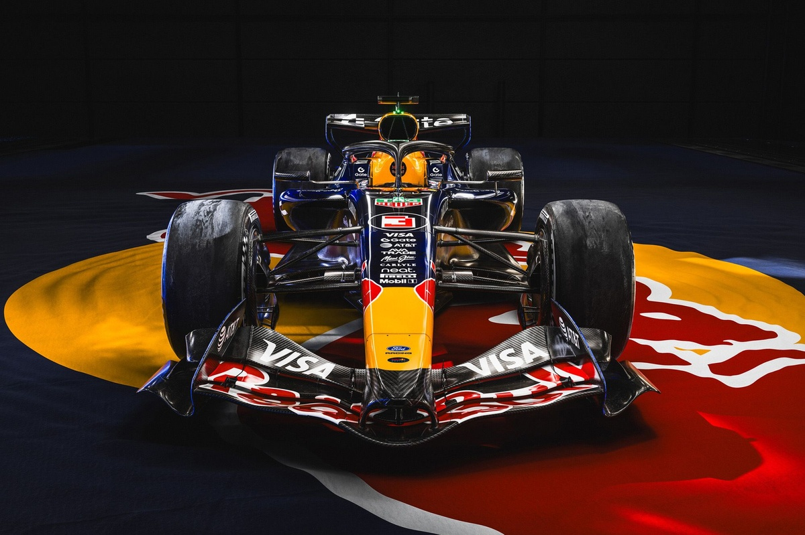
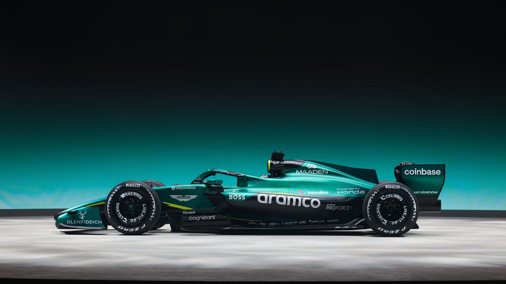
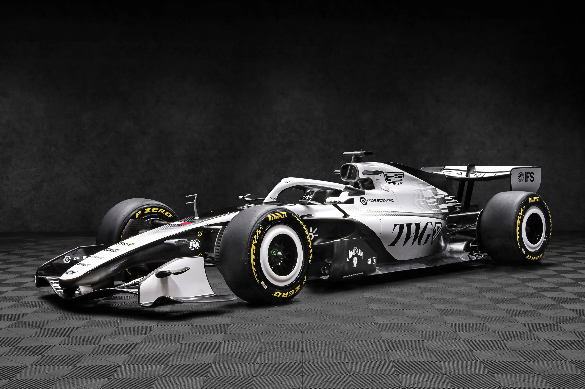

Ferrari
Una de las escuderías más reconocidas de la categoría, con una larga historia en el automovilismo.
TradiciónCada equipo combina pilotos, ingeniería, estrategia y mecánica para preparar sus monoplazas y competir durante la temporada.
Estas escuderías representan distintas historias, filosofías de diseño y formas de afrontar los retos de la competición.

Una de las escuderías más reconocidas de la categoría, con una larga historia en el automovilismo.
Tradición
Equipo conocido por su trayectoria deportiva y su participación en el desarrollo tecnológico de los monoplazas.
Innovación
Escudería con una importante trayectoria en la era moderna y un fuerte enfoque en ingeniería.
Ingeniería
Equipo que destaca por su enfoque competitivo, el desarrollo aerodinámico y la estrategia de carrera.
Rendimiento
Escudería que combina identidad británica, desarrollo técnico y ambición dentro de la categoría.
Desarrollo
Marca estadounidense vinculada a la expansión de la presencia de fabricantes en el automovilismo internacional.
Nuevos retosConducen el monoplaza, gestionan neumáticos y energía, y comunican al equipo lo que sucede en la pista.
Analizan datos y realizan ajustes para mejorar el equilibrio, la aerodinámica y el rendimiento del vehículo.
Estudian el ritmo de carrera, los neumáticos y las condiciones para decidir cuándo realizar las paradas.
Las características de cada circuito influyen en la configuración del monoplaza y en las decisiones estratégicas de los equipos.
Explorar circuitos Sitio oficial de F1